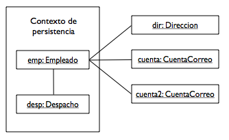

Entity Manager
Entity managers y contexto de persistencia
Vamos a comentar algunas consideraciones generales sobre el uso de entity managers y repasar algunos conceptos sobre el contexto de persistencia asociado.
Creación de entity managers
La forma que tiene una aplicación de crear un entity manager es mediante una llamada al método createEntityManager() de una instancia de EntityManagerFactory. A partir de ese momento la aplicación debe gestionar el ciclo de vida del entity manager, comenzando y cerrando transacciones y cerrando el entity manager con una llamada a close() cuando ya no necesitemos utilizar el contexto de persistencia.
Repetimos a continuación un ejemplo típico de uso que ya hemos visto previamente:
public class AutorTest {
public static void main(String[] args) {
EntityManagerFactory emf =
Persistence.createEntityManagerFactory("SimpleJPA");
EntityManager em = emf.createEntityManager();
EntityTransaction tx = em.getTransaction();
tx.begin();
Autor autor = em.find(Autor.class, "ritchie");
Mensaje mensaje = new Mensaje("Hola mundo", autor);
em.persist(mensaje);
tx.commit();
em.close();
}
}
La creación de entity managers es una operación no demasiado costosa, ya que Hibernate define un pool de entity managers asociado a la factoria. El método createEntityManager no realiza ninguna reserva de memoria ni de otros recursos sino que simplemente devuelve alguno de los entity managers disponibles.
Cuando estamos definiendo las capas de una aplicación es importante decidir quién va a tener la responsabilidad de crear y cerrar los entity managers. En una arquitectura por capas en la que definimos una clase DAO (o Manager, en la terminología de Spring) asociada a cada entidad surge la duda de dónde crear y dónde cerrar el entity manager. Recordemos que hablamos de dos enfoques: el enfoque DAO y el enfoque EAO.
En el patrón DAO, todas las operaciones relacionados con el entity manager y el contexto de persistencia se encapsulan en los métodos del DAO, utilizando la estrategia denominada un entity manager por método. Los objetos que se devuelven como resultado de las operaciones del DAO son entidades desconectadas resultantes de haber cerrado el entity manager al finalizar el método del DAO. Ya vimos que este enfoque tiene algunas desventajas, ya que impide que fuera del DAO se trate con objetos gestionados, se recorran las entidades o se realicen varias operaciones dentro de una misma transacción.
La alternativa es el patrón EAO, en el que los métodos que trabajan con las entidades asumen un contexto de persistencia ya creado y que la entidad está gestionada. El contexto de persistencia hay que obtenerlo fuera de los métodos y pasárselo al EAO en su constructor. Recordemos el código:
import javax.persistence.*;
import java.util.List;
public class EmpleadoEAO {
protected EntityManager em;
public EmpleadoEAO(EntityManager em) {
this.em = em;
}
public Empleado createEmpleado(int id, String nombre, long sueldo) {
Empleado emp = new Empleado(id);
emp.setNombre(nombre);
emp.setSueldo(sueldo);
em.persist(emp);
return emp;
}
public void removeEmpleado(Empleado emp) {
em.remove(emp);
}
public void subeSueldoEmpleado(Empleado emp, long aumento) {
emp.setSueldo(emp.getSueldo() + aumento);
}
public void cambiaNombreEmpleado(Empleado emp, String nuevoNombre) {
emp.setNombre(nuevoNombre);
}
public Empleado findEmpleado(int id) {
return em.find(Empleado.class, id);
}
public List<Empleado> findEmpleadosSueldo(long sueldo) {
Query query = em.createQuery("SELECT e FROM Empleado e "
+ "WHERE e.sueldo > :sueldo");
query.setParameter("sueldo", 20000);
return (List<Empleado>) query.getResultList();
}
}
Un ejemplo de cómo usar el enfoque es el siguiente código:
EntityManagerFactory emf = Persistence.createEntityManagerFactory("SimpleJPA");
EntityManager em = emf.createEntityManager();
EmpleadoDAO empDAO = new EmpleadoDAO(em);
em.getTransaction().begin();
Empleado emp = empDAO.findEmpleado(122);
emp = empDAO.subeSueldoEmpleado(2000);
em.getTransaction().commit();
em.close();
System.out.println("El nuevo sueldo de " + emp.getNombre() + " es " + emp.getSueldo());
Por último, es muy importante considerar que los objetos EntityManager no son thread-safe. Cuando los utilicemos en servlets, por ejemplo, deberemos crearlos en cada petición HTTP. Esto también es correcto, además, para evitar que distintas sesiones accedan al mismo contexto de persistencia.
Si queremos que una sesión HTTP utilice un único entity manager, podríamos guardarlo en el objeto HtttpSession y acceder a él al comienzo de cada petición.
El objeto EntityManagerFactory a partir del que obtenemos los entity managers sí que es thread-safe. Podemos implementar un Singleton al que acceden todos los threads para obtener entity managers.
Contextos de persistencia
La clave para entender el entity manager es entender el contexto de persistencia. La inclusión o no de una entidad en el contexto de persistencia determinará el resultado de cualquier operación de persistencia. Si el contexto de persistencia participa en una transacción, entonces el estado en memoria de las entidades gestionadas se sincronizará con la base de datos. Sin embargo, a pesar del importante papel que juega, el contexto de persistencia nunca es realmente visible a la aplicación. Siempre se accede a él indirectamente a través del entity manager y asumimos que está ahí cuando lo necesitamos.
Es también fundamental entender que el contexto de persistencia hace el papel de caché de las entidades que están realmente en la base de datos. Cuando actualizamos una instancia en el contexto de persistencia estamos actualizando una caché, una copia que sólo se hace persistente en la base de datos cuando el entity manager realiza un flush de las instancias en la base de datos. Simplificando bastante, podemos pensar que el entity manager realiza el siguiente proceso para todas las entidades:
- Si la aplicación solicita una entidad (mediante un find, o accediendo a un atributo de otra entidad en una relación), se comprueba si ya se encuentra en el contexto de persistencia. Si no se ha recuperado previamente, se obtiene la instancia de la entidad de la base de datos.
- La aplicación utiliza las instancias del contexto de persistencia, accediendo a sus atributos y (posiblemente) modificándolos. Todas las modificaciones se realizan en la memoria, en el contexto de persistencia.
- En un momento dado (cuando termina la transacción, se ejecuta una query o se hace una llamada al método flush) el entity manager comprueba qué entidades han sido modificadas y vuelca los cambios a la base de datos.
Es muy importante darse cuenta de la diferencia entre el contexto de persistencia y la base de datos propiamente dicha. No se encuentran sincronizados hasta que el entity manager vuelca los cambios a la base de datos. La aplicación debe ser consciente de esto y utilizar razonablemente los contextos de persistencia.
Veamos un ejemplo sencillo que puede ilustrar esto. Supongamos que tenemos una relación uno-a-muchos entre Autor y Mensaje, que la entidad Mensaje es la propietaria de la relación (contiene la clave ajena hacia Autor) y que la aplicación ejecuta el siguiente código para añadir un mensaje a un autor:
em.getTransaction().begin();
Autor autor = em.find(Autor.class, "kirai");
System.out.println(autor.getNombre() + " ha escrito " +
autor.getMensajes().size() +
" mensajes");
Mensaje mens = new Mensaje("Nuevo mensaje", autor);
em.persist(mens);
em.getTransaction().commit();
System.out.println(autor.getNombre() + " ha escrito " +
autor.getMensajes().size() +
" mensajes");
Si comprobamos qué sucede veremos que no aparecerá ningún cambio entre el primer mensaje y el segundo, ambos mostrarán el mismo número de mensajes. ¿Por qué? ¿Es que no se ha actualizado el nuevo mensaje de Kirai en la base de datos?. Si miramos en la base de datos, comprobamos que la transacción sí que se ha completado correctamente. Sin embargo, no se ha mostrado bien el segundo mensaje, ya que cuando llamamos al método getMensajes() en la colección resultante no aparece el nuevo mensaje que acabamos de añadir.
Este es un ejemplo del tipo de errores que podemos cometer por trabajar con contextos de persistencia pensando que estamos conectados directamente con la BD. El problema se encuentra en que la primera llamada a getMensajes() (antes de crear el nuevo mensaje) ha generado la consulta a la base de datos y ha cargado el resultado en memoria. Cuando hacemos una segunda llamada, el proveedor detecta que esa información ya la tiene en la caché y no la vuelve a consultar.
Una posible solución es hacer que la aplicación modifique el contexto de persistencia para que esté sincronizado con la base de datos. Lo haríamos con el siguiente código:
em.getTransaction().begin();
Autor autor = em.find(Autor.class, "kirai");
System.out.println(autor.getNombre() + " ha escrito " +
autor.getMensajes().size() +
" mensajes");
Mensaje mens = new Mensaje("Nuevo mensaje", autor);
em.persist(mens);
em.getTransaction().commit();
autor.getMensajes().add(Mensaje);
System.out.println(autor.getNombre() + " ha escrito " +
autor.getMensajes().size() +
" mensajes");
La llamada a add() añade un mensaje nuevo a la colección de mensajes del autor existente en el contexto de persistencia. De esta forma estamos reflejando en memoria lo que hemos realizado en la base de datos.
Otra posible solución es obligar al entity manager a que sincronice la entidad y la base de datos. Una posible forma de hacerlo es llamando al método refresh() del entity manager:
em.getTransaction().begin(); // ... añado un mensaje al autor em.getTransaction().commit(); em.refresh(autor); System.out.println(autor.getNombre() + " ha escrito " + autor.getMensajes().size() + " mensajes");
Estos ejemplos ponen en evidencia que para trabajar bien con JPA es fundamental entender que el contexto de persistencia es una caché de la base de datos propiamente dicha.
Operaciones y contexto de persistencia
Una vez vistos los conceptos de entity manager y contexto de persistencia, vamos a repasar las distintas operaciones que podemos realizar con las entidades y los entity managers, desde el punto de vista de qué sucede en el contexto de persistencia y cómo se realiza la sincronización con la BD. Introduciremos también algunas operaciones no vistas hasta ahora como getReference() y merge().
Persist
El método persist() del EntityManager acepta una nueva instancia de entidad y la convierte en gestionada. Si al entidad que se va a hacer persistir ya está gestionada en el contexto de persistencia, la llamada se ignora. La operación contains() puede usarse para comprobar si una entidad está gestionada, pero es muy raro el tener que llamar a esta operación. La aplicación debería saber qué entidades están gestionadas y cuáles no. El diseño de la aplicación define cuándo las entidades pasan a ser gestionadas o desconectadas.
El hecho de convertir una entidad en gestionada no la hace persistir inmediatamente en la base de datos. La verdadera llamada a SQL para crear los datos relacionales no se generará hasta que el contexto de persistencia se sincronice con la base de datos. Lo más normal es que esto suceda cuando se realiza un commit de la transacción. En el momento en que la entidad se convierte en gestionada, los cambios que se realizan sobre ella afectan al contexto de persistencia. Y en el momento en que la transacción termina, el estado en el que se encuentra la entidad es volcado en la base de datos.
Si se llama a persist() fuera de una transacción la entidad se incluirá en el contexto de persistencia, pero no se realizará ninguna acción hasta que la transacción comience y el contexto de persistencia se sincronice con la base de datos.
La operación persist() se utiliza con entidades nuevas que no existen en la base de datos. Si se le pasa una instancia con un identificador que ya existen en la base de datos el proveedor de persistencia puede detectarlo y lanzar una excepción EntityExistsException. Si no lo hace, entonces se lanzará la excepción cuando se sincronice el conexto de persistencia con la base de datos, al encontrar una clave primaria duplicada.
Un ejemplo completo de utilización de persist() es el siguiente:
Departamento dept = em.find(Departamento.class, 30);
Empleado emp = new Empleado();
emp.setId(53);
emp.setNombre("Pedro");
emp.setDepartamento(dept);
dept.getEmpleados().add(emp);
em.persist(emp);
En el ejemplo comenzamos obteniendo una instancia que ya existe en la base de datos de la entidad Departamento. Se crea una nueva instancia de Empleado, proporcionando la clave primaria y algún atributo. Después asignamos el empleado al departamento, llamando al método setDepartamento() del empleado y pasándole la instancia de Departamento que habíamos recuperado. Actualizamos el otro lado de la relación llamando al método add() de la colección para que el contexto de persistencia mantenga correctamente la relación bidireccional. Y por último realizamos la llamada al método persist() que convierte la entidad en gestionada. Cuando el contexto de persistencia se sincroniza con la base de datos, se añade la nueva entidad en la tabla y se actualiza al mismo tiempo la relación. Hay que hacer notar que sólo se actualiza la tabla de Empleado, que es la propietaria de la relación y la que contiene la clave ajena a Departamento.
Find y GetReference
El método find() se utiliza para localizar una entidad por su clave primaria. La llamada devuelve una entidad gestionada asociada al contexto de persistencia del entity manager.
Existe una versión especial de find() que se puede usar cuando se quiere añadir un objeto con una clave primaria conocida a una relación. Para ello se puede usar el método getReference() del entity manager. Ya que únicamente estamos creando una relación, no es necesario cargar todo el objeto de la base de datos. Sólo se necesita su clave primaria. Veamos la nueva versión del ejemplo anterior:
Departamento dept = em.getReference(Departamento.class, 30);
Empleado emp = new Empleado();
emp.setId(53);
emp.setNombre("Pedro");
emp.setDepartamento(dept);
dept.getEmpleados().add(emp);
em.persist(emp);
Esta versión es más eficiente que la anterior porque no se realiza ningún SELECT en la base de datos para buscar la instancia del Departamento. Cuando se llama a getReference(), el proveedor devolverá un proxy al Departamento sin recuperarlo realmente de la base de datos. En tanto que sólo se acceda a la clave primaria, no se recuperará ningún dato. Y cuando se haga persistente el Empleado, se guardará en la clave ajena correspondiente el valor de la clave primaria del Departamento.
Un posible problema de este método es que, a diferencia de find() no devuelve null si la instancia no existe, ya que realmente no realiza la búsqueda en la base de datos. Únicamente se debe utilizar el método cuando estamos seguros de que la instancia existe en la base de datos. En caso contrario estaremos guardando en la variable dept una referencia (clave primaria) de una entidad que no existe, y cuando se haga persistente el empleado se generará una excepción porque el Empleado estará haciendo referencia a una entidad no existente.
En general, la mayoría de las veces llamaremos al método find() directamente. Las implementaciones de JPA hacen un buen trabajo con las cachés y si ya tenemos la entidad en el contexto de persistencia no se realiza la consulta a la base de datos.
Merge
El método merge() permite volver a incorporar en el contexto de persistencia del entity manager una entidad que había sido desconectada. Debemos pasar como parámetro la entidad que queremos incluir. Hay que tener cuidado con su utilización, porque el objeto que se pasa como parámetro no pasa a ser gestionado. Hay que usar el objeto que devuelve el método. Un ejemplo:
public void subeSueldo(Empleado emp, long inc) Empleado empGestionado = em.merge(emp); empGestionado.setSueldo(empGestionado.getSueldo()+inc); }
Si una entidad con el mismo identificador que emp existe en el contexto de persistencia, se devuelve como resultado. Si el objeto que se le pasa a merge() es un objeto nuevo, se comporta igual que persist(), con la única diferencia de que la entidad gestionada es la devuelta como resultado de la llamada.
Remove
Borrar una entidad no es una tarea compleja, pero puede requerir algunos pasos, dependiendo del número de relaciones en la entidad que vamos a borrar. En su forma más simple, el borrado de una entidad se realiza pasando la entidad como parámetro del método remove() del entity manager que la gestiona. En el momento en que el contexto de persistencia se sincroniza con una transacción y se realiza un commit, la entidad se borra. Hay que tener cuidado, sin embargo, con las relaciones en las que participa la entidad para no comprometer la integridad de la base de datos.
Veamos un sencillo ejemplo. Consideremos la relación unidireccional uno-a-uno que vimos en el tema anterior entre Empleado y Despacho. Supongamos el siguiente código dentro de una transacción, en el que empId corresponde a una clave primaria de un Empleado:
Empleado emp = em.find(Empleado.class, empId); em.remove(emp.getDespacho());
Cuando se realice un commit de la transacción veremos una sentencia DELETE en la tabla DESPACHO, pero en ese momento obtendremos una excepción con un error de la base de datos referido a que hemos violado una restricción de la clave ajena. Esto se debe a que existe una restricción de integridad referencial entre la tabla EMPLEADO y la tabla DESPACHO. Se ha borrado una fila de la tabla DESPACHO pero la clave ajena correspondiente en la tabla EMPLEADO no se ha puesto a NULL. Para corregir el problema, debemos poner explícitamente a null el atributo despacho de la entidad Empleado antes de que la transacción finalice:
Empleado emp = em.find(Empleado.class, empId); Despacho desp = emp.getDespacho(); emp.setDespacho(null); em.remove(desp);
El mantenimiento de las relaciones es una responsabilidad de la aplicación. Casi todos los problemas que suceden en los borrados de entidades tienen relación con este aspecto. Si la entidad que se va a borrar es el objetivo de una clave ajena en otras tablas, entonces debemos limpiar esas claves ajenas antes de borrar la entidad.
Clear
En ocasiones puede ser necesario limpiar (clear) contexto de persistencia y vaciar las entidades gestiondas. Esto puede suceder, por ejemplo, en conextos extendidos gestionados por la aplicación que han crecido demasiado. Por ejemplo, consideremos el caso de un entity manager gestionado por la aplicación que lanza una consulta que devuelve varios cientos de instancias entidad. Una vez que ya hemos realizado los cambios a unas cuantas de esas instancias y la transacción se termina, se quedan en memoria cientos de objetos que no tenemos intención de cambiar más. Si no queremos cerrar el contexto de persistencia en ese momento, entonces tendremos que limpiar de alguna forma las instancias gestionadas, o el contexto de persistencia irá creciendo cada vez más.
El método clear() del interfaz EntityManager se utiliza para limpiar el contexto de persistencia. En muchos sentidos su funcionamiento es similar a un rollback de una transacción. Todas las instancias gestionadas por el contexto e persistencia se desconectan del contexto y quedan con el estado previo a la llamada a clear(). La operación clear() es del tipo todo o nada. No es posible cancelar selectivamente la gestión de una instancia particular cuando el contexto de persistencia está abierto.
Modificación de atributos de la instancia
La última forma con la que podemos modificar relacionados con una entidad en la base de datos es modificando los atributos de una instancia gestionada. En el momento en que se haga un commit de la transacción los cambios se actualizarán en la base de datos mediante una sentencia UPDATE.
Es muy importante notar que no está permitido modificar la clave primaria de una entidad gestionada. Si intentamos hacerlo, en el momento de hacer un commit la transacción lanzará una excepción RollbackException. Para reforzar esta idea, es conveniente definir las entidades sin un método set de la clave primaria. En el caso de aquellas entidades con una generación automática de la clave primaria, ésta se generará en tiempo de creación de la entidad. Y en el caso en que la aplicación tenga que proporcionar la clave primaria, lo puede hacer en el constructor.
Operaciones en cascada
Por defecto, las operaciones del entity manager se aplican únicamente a las entidades proporcionadas como argumento. La operación no se propagará a otras entidades que tienen relación con la entidad que se está modificando. Lo hemos visto antes con la llamada a remove(). Pero no sucede lo mismo con operaciones como persist(). Es bastante probable que si tenemos una entidad nueva y tiene una relación con otra entidad, las dos deben persistir juntas.
Consideremos la secuencia de operaciones del siguiente códgo que muestran cómo se crea un nuevo Empleado con una entidad Direccion asociada y cómo se hacen los dos persistentes. La segunda llamada a persist() sobre la Direccion es algo redundante. Una entidad Direccion se acopla a la entidad Empleado que la almacena y tiene sentido que siempre que se cree un nuevo Empleado, se propague en cascada la llamada a persist() para la Direccion.
Empleado emp = new Empleado(12, "Rob");
Direccion dir = new Direccion("Alicante");
emp.setDireccion(dir);
em.persist(emp);
em.persist(dir);
El API JPA proporciona un mecanismo para definir cuándo operaciones como persist() deben propagarse en cascada. Para ello se define el elemento cascade en todas las anotaciones de relaciones (@OneToOne, @OneToMany, @ManyToOne y @ManyToMany).
Las operaciones a las que hay que aplicar la propagación se identifican utilizando el tipo enumerado CasacadeType, que puede tener como valor PERSIST, REFRESH, REMOVE, MERGE y ALL.
Persist en cascada
Para activar la propagación de la persistencia en cascada debemos añadir el elemento cascade=CascadeType.PERSIST en la declaración de la relación. Por ejemplo, en el caso anterior, si hemos definido una relación muchos-a-uno entre Empleado y Direccion, podemos escribir el siguiente código:
@Entity
public class Empleado {
// ...
@ManyToOne(cascadeCascdeType.PERSIST)
Direccion direccion;
// ...
}
Para invocar la persistencia en cascada sólo nos tenemos que asegurar de que la nueva entidad Direccion se ha puesto en el atributo direccion del Empleado antes de llamar a persist() con él. La definición de la operación en cascada es unidireccional, y tenemos que tener en cuenta quién es el propietario de la relación y dónde se va a actualizar la misma antes de tomar la decisión de poner el elemento en ambos lados. Por ejemplo, en el caso anterior cuando definamos un nuevo empleado y una nueva dirección pondremos la dirección en el empleado, por lo que el elemento cascade tendremos que definirlo únicamente en la relación anterior.
Borrado en cascada
A primera vista, la utilización de un borrado en cascada puede parecer atractiva. Dependiendo de la cardinalidad de la relación podría eliminar la necesidad de eliminar múltiples instancias de entidad. Sin embargo, aunque es un elemento muy interesante, debe utilizarse con cierto cuidado. Hay sólo dos situaciones en las que un remove() en cascada se puede usar sin problemas: relaciones uno-a-uno y uno-a-muchos en donde hay una clara relación de propiedad y la eliminación de la instancia propietaria debe causar la eliminación de sus instancias dependientes. No puede aplicarse ciegamente a todas las relaciones uno-a-uno o uno-a-muchos porque las entidades dependientes podrían también estar participando en otras relaciones o podrían tener que continuar en la base de datos como entidades aisladas.
Habiendo realizado el aviso, veamos qué sucede cuando se realiza una operación de remove() en cascada. Si una entidad Empleado se elimina, no tiene sentido eliminar el despacho (seguirá existiendo) pero sí sus cuentas de correo (suponiendo que le corresponde más de una). El siguiente código muestra cómo definimos este comportamiento:
@Entity
public class Empleado {
// ...
@OneToOne(cascade={CascadeType.PERSIST})
Despacho despacho;
@OneToMany(mappedBy="empleado",
cascade={CascadeType.PERSIST, CascadeType.REMOVE})
Collection<CuentaCorreo> cuentasCorreo;
// ...
}
Cuando se llama al método remove() el entity manager navegará por las relaciones entre el empleado y sus cuentas de correo e irá eliminando todas las instancias asociadas al empleado.
Hay que hacer notar que este borrado en cascada afecta sólo a la base de datos y que no tiene ningún efecto en las relaciones en memoria entre las instancias en el contexto de persistencia. Cuando la instancia de Empleado se desconecte de la base de datos, su colección de cuentas de correo contendrá las mismas instancias de CuentaCorreo que tenía antes de llamar a la operación remove(). Incluso la misma instancia de Empleado seguirá existiendo, pero desconectada del contexto de persistencia.
Contextos de persistencia
Sincronización con la base de datos
Cada vez que el proveedor de persistencia genera sentencias SQL y las escribe en la base de datos a través de una conexión JDBC, decimos que se ha volcado (flush) el contexto de persistencia. Todos los cambios pendientes que requieren que se ejecute una sentencia SQL en la transacción se escriben en la base de datos cuando ésta realiza un commit. Esto significa que cualquier operación SQL que tenga lugar después de haberse realizado el volcado ya incorporará estos cambios. Esto es particularmente importante para consultas SQL que se ejecutan en una transacción que también está realizando cambios en los datos de la entidad.
¿Qué sucede exactamente cuando se realiza un volcado del contexto de persistencia? Un volcado consiste básicamente en tres componentes: entidades nuevas que necesitan hacerse persistentes, entidades modificadas que necesitan ser actualizadas y entidades borradas que deben ser eliminadas de la base de datos. Toda esta información es gestionada por el contexto de persistencia.
Cuando ocurre un volcado, el entity manager itera primero sobre las entidades gestionadas y busca nuevas entidades que se han añadido a las relaciones y que tienen activada la opción de persistencia en cascada. Esto es equivalente lógicamente a invocar a persist() con cada una de las entidades gestionadas antes de que se realice el volcado. El entity manager también comprueba la integridad de todas las relaciones. Si una entidad apunta a otra que no está gestionada o que ha sido eliminada, entonces se puede lanzar una excepción.
Las reglas que determinan si un volcado falla o no en presencia de entidades no gestionadas pueden ser complicadas. Veamos un ejemplo que demuestra los asuntos más comunes. La siguiente figura muestra un diagrama de objetos para una instancia de Empleado y algunos objetos con los que está relacionado.

Las instancias emp y desp están gestionadas en el contexto de persistencia. El objeto dir es una entidad desconectada de una transacción previa y los objetos CuentaCorreo son objetos nuevos que no han formado parte de ninguna relación hasta el momento. Supongamos que se va a volcar la instancia emp. Para determinar el resultado de este volcado, debemos mirar primero las características de la opción cascade en la definición de la relación. Supongamos que la entidad Empleado se define de la siguiente forma:
@Entity
public class Empleado {
// ...
@OneToOne
Despacho despacho;
@OneToMany(mappedBy="empleado", cascade=CascadeType.PERSIST)
Collection<CuentaCorreo> cuentasCorreo;
@ManyToOne
Direccion direccion;
// ...
}
Vemos que sólo la relación cuentasCorreo tiene una opción de persistencia en cascada. El resto de relaciones tienen la opción de cascada por defecto, por lo que no la tienen activada.
Comenzando por el objeto emp vamos a recorrer el proceso de volcado como si fuéramos el proveedor de persistencia. El objeto emp está gestionado y está enlazado con otros cuatro objetos. El primer paso en el proceso es recorrer las relaciones desde esta entidad como si fuéramos a invocar a persist() con ella. El primer objeto que encontramos en este proceso es el objeto desp en la relación una-a-una despacho. Al ser una instancia gestionada, no tenemos que hacer nada más. Después vamos a la relación cuentasCorreo con dos objetos CuentaCorreo. Estos objetos son nuevos y esto causaría normalmente una excepción, pero debido a que se ha definido PERSIST como opción de cascada, hacemos lo equivalente a invocar a persist() en cada objeto CuentaCorreo. Esto hace que los objetos sean gestionados, haciéndolos formar parte del contexto de persistencia. Los objetos CuentaCorreo no tienen ninguna otra relación que hacer persistente en cascada, por lo que hemos terminado por este lado. Después alcanzamos el objeto dir a través de la relación direccion. Ya que este objeto está desconectado, lanzaríamos normalmente una excepción, pero esta relación es un caso especial el algoritmo de volcado. Si el objeto desconectado es el destino de una relación uno-a-uno o muchos-a-uno no se lanzará una excepción y se procederá al volcado. Esto es debido a que el acto de hacer persistente la entidad propietaria de la relación no depende del objetivo. La entidad propietaria contiene una clave ajena y sólo necesita almacenar el valor de la clave primaria de la entidad con la que está relacionada. No hay que modificar nada en la entidad destino. Con esto hemos terminado de volcar el objeto emp. Ahora debemos ir al objeto desp y comenzar de nuevo. Terminaremos cuando no queden nuevos objetos que hacer persistentes.
Si en el proceso de volcado alguno de los objetos a los que apunta la instancia que estamos haciendo persistente no está gestionado, no tiene el atributo de persistencia en cascada y no está incluido en una relación uno-a-uno o muchos-a-uno entonces se lanzará una excepción IllegalStateException.
Desconexión de entidades
Como resultado de una consulta o de una relación, obtendremos una colección de entidades que deberemos tratar, pasar a otras capas de la aplicación y, en una aplicación web, mostrar en una página JSP o JSF. En este apartado vamos a ver cómo trabajar con las entidades obtenidas y vamos a reflexionar sobre su desconexión del contexto de persistencia.
Una entidad desconectada (detached entity en inglés) es una entidad que ya no está asociada a un contexto de persistencia. En algún momento estuvo gestionada, pero el contexto de persistencia puede haber terminado, o la entidad puede haberse transformado de forma que ha perdido su asociación con el contexto de persistencia que la gestionaba. Cualquier cambio que se realice en el estado de la entidad no se hará persistente en la base de datos, pero todo el estado que estaba en la entidad antes de desconectarse sigue estando ahí para ser usado por la aplicación.
Hay dos formas de ver la desconexión de entidades. Por una parte, es una herramienta poderosa que puede utilizarse por las aplicaciones para trabajar con aplicaciones remotas o para soportar el acceso a los datos de la entidad mucho después de que la transacción ha concluido. Otra posible interpretación es que puede ser una fuente de problemas frustrantes cuando las entidades contienen una gran cantidad de atributos que se cargan de forma perezosa y los clientes que usan estas entidades desconectadas necesitan acceder a esta información.
Existen muchas condiciones en las que una entidad se convierte en desconectada. Cada una de las situaciones siguientes generarán entidades desconectadas:
- Cuando el contexto de persistencia se cierra con una llamada a close() del entity manager
- Cuando se llama al método clear() del entity manager
- Cuando se produce un rollback de la transacción
- Cuando una entidad se serializa
Todos los casos se refieren a contextos de persistencias gestionados por la aplicación (Java SE y aplicaciones web sin contenedor de EJB).
En temas anteriores hemos introducido el tipo de recuperación LAZY que puede aplicarse a los mapeos básicos o las relaciones. Este elemento tiene como efecto indicar al proveedor que la carga de los atributos de la entidad no debe hacerse hasta que se acceden por primera vez. Aunque no se suele utilizar para los atributos básicos, sí que es muy importante utilizar con cuidado esta característica en las relaciones para mejorar el rendimiento de la aplicación.
Tenemos que considerar por tanto, el impacto de la desconexión en la carga perezosa. Veamos un ejemplo. Supongamos que tenemos la siguiente definición de Empleado:
@Entity
public class Empleado {
// ...
@ManyToOne
private Direccion direccion;
@OneToOne(fetch=FetchType.LAZY)
private Departamento departamento;
@OneToMany(mappedBy="employee")
private Collection<CuentaCorreo> cuentasCorreo;
// ...
}
La relación dirección se cargará de forma ávida (eager, en inglés) debido a que no hemos especificado ninguna característica de carga y esa es la opción por defecto en las relaciones muchos-a-uno. En el caso de la relación departamento, que se cargaría también de forma ávida, hemos especificado una opción LAZY, por lo que la referencia se cargará de forma perezosa. Las cuentas de correo, por ser una relación uno-a-muchos se cargará también de forma perezosa por defecto.
En tanto en que la entidad Empleado esté gestionada todo funciona como es de esperar. Cuando la entidad se recupera de la base de datos, sólo la instancia Direccion se cargará en ella. El proveedor obtendrá las entidades necesarias cuando la aplicación acceda a las relaciones cuentasCorreo o departamento.
Si la entidad se desconecta, el resultado de acceder a las relaciones anteriores es ya algo más complidado. Si se accedió a las relaciones cuando la entidad estaba gestionada, entonces las entidades pueden también ser recuperadas de forma segura aunque la entidad Empleado esté desconectada. Si, sin embargo, no se accedió a las relaciones, entonces tenemos un problema.
El comportamento del acceso a atributos no cargados cuando la entidad está desconectada no está definido en la especificación. Algunas implemenentaciones pueden intentar resolver la relación, mientras que otros simplemente lanzan una excepción y dejan el atributo sin inicializar. En el caso de Hibernate, se lanza una excepción de tipo org.hibernate.LazyInitializationException. Si la entidad ha sido desconectada debido a una serialización entonces no hay virtualmente ninguna esperanza de resolver la relación. La única forma portable de gestionar estos casos es no utilizando estos atributos.
En el caso en el que las entidades no tengan atributos de carga perezosa, no debe haber demasiados problemas con la desconexión. Todo el estado de la entidad estará todavía disponible para su uso en la entidad. Vamos a ver a continuación las dos posibles estrategias para trabajar con entidades desconectadas: preparar las entidades para la desconexión y no desconectar en absoluto. Vamos a centrarnos en cómo aplicar estas estrategias a aplicaciones web que usan servlets, páginas JSP y peticiones HTTP.
Contextos de persistencia y aplicaciones web
Una de las características fundamentales de las aplicaciones web es que están basadas en peticiones y que no tienen estado. Es cierto que es posible definir una sesión en la aplicación y que los servlets proporcionan soporte para ello. Pero muchas veces esta sesión únicamente se utiliza a efectos de autentificación del usuario. Casi toda la lógica de negocio de la aplicación es no conversacional: el usuario hace una petición y, el servidor la contesta y el navegador la muestra. Vamos a considerar este escenario.
Por ser más específicos, supongamos que un servlet realiza llamada a un método de negocio que implementa una query JPA y que recibe una colección de entidades como resultado. El servlet coloca entonces estas entidades en el request y lo envía a un JSP para presentación. Este patrón se denomina el Page Controller. En el contexto de la arquitectura MVC, el método de consulta proporciona el modelo, la página JSP es la vista y el servlet el controlador.
Veamos la clase que contiene el método de negocio que obtiene los resultados que serán mostrados por la página JSP:
public class EmpleadoService {
private EntityManagerFactory emf;
public EmpleadoService(EntityManagerFactory emf) {
this.emf = emf;
}
public List<Empleado> findAll() {
EntityManager em = emf.createEntityManager();
List<Empleado> listaEmp = em.createQuery("SELECT e FROM Employee e").getResultList();
em.close();
return listaEmp;
}
// ...
}
Hemos intentado simplificar al máximo la clase y adaptarla a la solución que estamos planteando en este momento. Más adelante la modificaremos para incluir otras funcionalidades.
Vemos que definimos un constructor al que pasamos un EntityManagerFactory que utilizaremos en el método de negocio para obtener el entity manager con el que se realizará la consulta. En el método de negocio obtenemos el entity manager, realizamos la consulta y cerramos el entity manager. Terminamos devolviendo una lista de entidades.
Este es un enfoque inicial, en el que devolvemos una lista de entidades desconectadas. Otro posible enfoque consiste en que la clase de negocio utilice un entity manager previamente creado y que devuelva entidades gestionadas. Lo veremos más adelante.
Antes de comentar en profundidad ambas opciones veamos cómo sería el servlet que realiza la llamada a una instancia de la clase EmpleadoService, obtendría los resultados y se los pasaría a la página JSP que pintaría los resultados:
public class EmployeeServlet extends HttpServlet {
protected void doGet(HttpServletRequest request, HttpServletResponse response)
throws ServletException, IOException {
EntityManagerFactory emf = Persistence.createEntityManagerFactory("SimpleJPA");
EmpleadoService empService = new EmpleadoService(emf);
List emps = empService.findAll();
request.setAttribute("empleados", emps);
getServletContext().getRequestDispatcher("/listaEmpleados.jsp")
.forward(request, response);
}
}
Por último, veamos la página JSP. Usa JSTL para iterar sobre la colección de instancias de Empleado y para mostrar el nombre del empleado y el nombre del departamento al que está asignado. La variable empleados a la que se accede con la etiqueta <c:forEach/> es la lista de instancias de Empleado que el servlet ha colocado en el request.
<!DOCTYPE HTML PUBLIC "-//W3C//DTD HTML 4.01 Transitional//EN">
<%@ taglib uri="http://java.sun.com/jsp/jstl/core" prefix="c"%>
<html>
<head>
<title>Lista empleados</title>
</head>
<body>
<table>
<thead>
<tr>
<th>Nombre</th>
<th>Departamento</th>
</tr>
</thead>
<tbody>
<c:forEach items="${empleados}" var="emp">
<tr>
<td><c:out value="${emp.nombre}"/></td>
<td><c:out value="${emp.departmento.nombre}"/></td>
</tr>
</c:forEach>
</tbody>
</table>
</body>
</html>
Veamos a continuación las dos posibles escenarios en los que podemos usar este código y cómo trabajar correctamente en ambos. En el primer escenario dejaremos que sea el EmpleadoService el que abra y cierre el entity manager, con lo que se devolverán entidades desconectadas. En el segundo escenario, utilizaremos un entity manager ya creado y las entidades devueltas estarán gestionadas en su contexto de persistencia.
Entidades desconectadas
En este escenario, la llamada al método findAll() devuelve un conjunto de entidades desconectadas de la base de datos. El código específico del servlet es el que hemos visto.
Si nos fijamos en el código del servlet y de la clase EmpleadoService vemos que en el método findAll() se creará un nuevo entity manager a partir del EntityManagerFactory que le pasamos como parámetro. Utilizando ese entity manager se realizará la pregunta y, por último, se cerrará el entity manager y se devolverán las entidades desconectadas, una lista de instancias Empleado. Esa lista de empleados se guarda en el atributo empleados del request y se llama a la página JSP listaEmpleados que la recoge y la recorre, escribiendo los nombres de los empleados y los nombres de su departemnto.
¿Cuál es el principal problema de este enfoque y cómo lo podemos solucionar? El problema tiene que ver con la carga perezosa de las entidades y su desconexión. La relación departamento está configurada para utilizar carga perezosa. Cuando se el método findAll() devuelve las entidades desconectadas, sus atributos departamento están vacíos. Cuando la página JSP recorra estas instancias e intente acceder a esos atributos se producirá un error. Veamos cómo podemos solucionar esto. Tenemos que asegurar que la relación departamento de la entidad Empleado se ha resuelto antes de que las entidades se desconecten.
La primera estrategia para resolver el problema es sencillamente activar la carga de los atributos accediendo a ellos. El código parece un poco raro, porque se descartan los valores devueltos por los métodos por el método get(), pero el resultado es correcto:
public List<Empleado> findAll() {
EntityManager em = emf.createEntityManager();
List<Empleado> listaEmp = em.createQuery("SELECT e FROM Employee e").getResultList();
for (Employee emp : emps) {
Departmento dept = emp.getDepartmento();
if (dept != null) {
dept.getNombre();
}
}
em.close();
return listaEmp;
}
Hay que hacer notar que no sólo se invoca el método getDepartamento() en la instancia de Empleado, sino que se invoca también el método getName() en la propia instancia Departamento. Esto es necesario porque las entidades devueltas en una relación con carga perezosa pueden ser proxies y necesitamos acceder a alguno de sus atributos para que sean cargadas totalmente.
La otra solución posible es configurar una carga ávida (eager loading) en la relación. Cuando una estamos continuamente utilizando accediendo a los atributos de una relación para asegurarnos de que están cargados, hay que plantearse si no sería más conveniente cambiar el tipo de relación. Hay que tener cuidado, sin embargo, con generalizar la carga ávida. Si la utilizamos en exceso puede penalizar el rendimiento de la aplicación, al estar realizando accesos a la base de datos para obtener datos que no vamos a utilizar.
Entidades gestionadas
La otra solución al escenario planteado es no desconectar las entidades. De esta forma no deberemos preocuparnos de si los datos están cargados o no, ya que será la página JSP la que acceda a la base de datos a través de las entidades gestionadas.
Para ello debemos buscar una forma de mantener el contexto de persistencia abierto durante la llamada al método de negocio y a la página JSP. La forma de hacerlo dependerá mucho de la arquitectura de la aplicación y de si estamos utilizando algún framework, tipo Struts o Spring. En general, debemos encontrar una forma de: (1) abrir un entity manager antes de la llamada al método de negocio, (2) pasarle el mismo entity manager (y su contexto de persistencia) al método de negocio y a la página JSP y (3) cerrar el entity manager una vez terminado el proceso.
En el ejemplo planteado no es demasiado complicado. La clase EmpleadoService la implementaríamos de la siguiente forma:
public class EmpleadoService {
private EntityManager em;
public EmpleadoService(EntityManager em) {
this.em = em;
}
public List<Empleado> findAll() {
List<Empleado> listaEmp = em.createQuery("SELECT e FROM Employee e").getResultList();
return listaEmp;
}
// ...
}
Y el servlet queda así de sencillo:
public class EmployeeServlet extends HttpServlet {
protected void doGet(HttpServletRequest request, HttpServletResponse response)
throws ServletException, IOException {
EntityManagerFactory emf = Persistence.createEntityManagerFactory("SimpleJPA");
EntityManager em = emf.createEntityManager();
EmpleadoService empService = new EmpleadoService(em);
List emps = empleadoService.findAll();
request.setAttribute("empleados", emps);
getServletContext().getRequestDispatcher("/listaEmpleados.jsp")
.forward(request, response);
em.close();
}
}
Creamos al comienzo de la petición EntityManager y se lo pasamos al constructor de la clase de negocio EmpleadoService. De esta forma, el método findAll() utilizará el entity manager que hemos creado en la petición y no lo cerrará al terminar. Así las instancias que se devuelvan estarán gestionadas y lo seguirán estando cuando se pase la llamada a la página JSP. Al final es muy importante cerrar el entity manager.
La solución anterior se denomina a veces entity manager por petición, ya que asociamos la vida del entity manager a la duración de la petición HTTP. Es una solución bastante común y es la que es usada por defecto por frameworks como Spring.
Es difícil utilizar un entity manager que se extienda más allá de una petición, implementando lo que se denominan conversaciones. Podríamos guardarlo en un objeto HTTPSession para utilizarlo en más de una página de la misma sesión (supongamos un carrito de la compra, por ejemplo), pero se hace complicado manejar diversos aspectos como la transaccionalidad o la concurrencia. Lo habitual es desconectar las entidades en cada petición y que la sesión trabaje con datos desconectados que volvemos a conectar (con merge()) en un nuevo entity manager cuando sea necesario.
La arquitectura EJB proporciona componentes denominados EJB con estado que están pensados precisamente para guardar el estado conversacional en una sesión. Si nuestra aplicación lo requiere, debemos considerar su utilización, en lugar de usar la sesión HTTP.